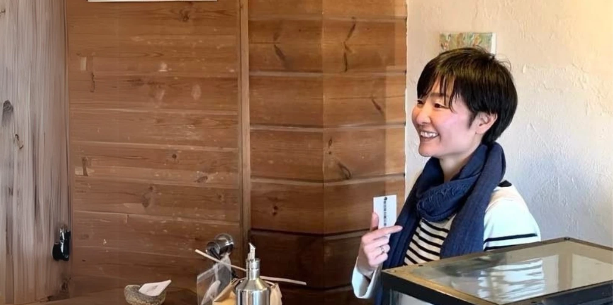

オーガニックを仕事で届けているあなたへ
なぜ、お客さまに教えると、あなたを応援したくなる人が増えるのか。
もしあなたが、お客さまに応援されながら続く事業をつくりたいなら、まず、あなたが知ることから。その最初の授業を、無料でお渡しします。
無料の授業動画を受け取る
オーガニックを仕事で届けているあなたへ
もしあなたが、お客さまに応援されながら続く事業をつくりたいなら、まず、あなたが知ることから。その最初の授業を、無料でお渡しします。
無料の授業動画を受け取るオーガニックの定義・歴史・世界の考え方・真価などを学ぶ、全6パートの授業です。
登録後すぐに、ドイツIOBオーガニックスクール（レムケなつこ）から、授業動画のページをメールでお送りします。その後も、スクールからのメールをお届けします。届かない場合は、迷惑メールフォルダをご確認ください。配信はいつでも解除できます。プライバシーポリシー
思いを込めて選んだ商品を、お客さまが手に取る。値札を見て、「高いですね」と棚に戻す。
丁寧に作った講座の案内に、「ちょっと高くて」と返ってくる。
原料を探した時間も、作り手と話してきたことも、伝える前に会話が終わってしまう。
値札を見る前に、そのものの背景を知る機会が、まだなかったのかもしれません。「高いですね」の一言の裏には、そんな場面が重なっていることがあります。
自分がなぜオーガニックを選び、届けているのか。その理由を、お客さまにちゃんと話したかった。
そんなとき、知識より、発信や売り方を磨きたくなる。私も「知識は、もういらない」と思い込んでいました。
いまは、お客さまの前に立つ人にこそ、知識が要ると考えています。
情報は、検索すれば出てくる。AIに聞けば、答えが返ってくる。知識はもういらない、と思う気持ちも、よく分かります。
でも、定義は検索すれば出てきても、「何がいいの？」とお客さまに聞かれたとき、自分の言葉で最後まで話せるかどうかは、また別の話ですよね。
スクールの受講生が、最初に学ぶ授業です。
ドイツIOBオーガニックスクール
オーガニックを、
自分の言葉で届けるための
最初の授業
全6パート・合計約32分
たとえば、お客さまのこんな質問に
この原理を、個々の商品がどこまで満たすかは、認証や作り手によって異なります。
配信はいつでも解除できます。
「高い」と言う理由は、一つではないと思います。予算のこともあれば、暮らしの中でほかに優先したいことがある場合も、ほかの選択肢と比べている場合もあります。お客さまには、お客さまの事情があります。
そのうえで、こんな調査があります。
61.4%
が、内容を今回初めて知った、または言葉を今回初めて聞いた
出典：農林水産省「令和7年度 有機農業及び有機食品に関する意識・意向調査結果」（消費者3,000人・2025年11〜12月）。「言葉は聞いたが、内容は今回初めて知った」54.9%と「言葉を今回初めて聞いた」6.5%の合計。
知る機会が、まだ少ない。
知ると、「高い」の見え方が変わる人もいます。暮らしのためにオーガニックを学んだ方から、高くて手が出なかったものを、本質的な価値を知って買えるようになったと、感謝の声をいただくことがあります。
弊社調査によると、暮らしのためにオーガニックを学ぶライフスタイルコースの受講生が出した「1週間」課題（94件）で、値段を壁に挙げた26人のうち約12人が、やってみて「思ったほど高くない」と書いています。修了のために提出された課題の自己申告で、集計は弊社が行いました。
私は、オーガニックの凄さは、自分にとっていい面と、社会の課題を解決する面の両方にあると考えています。
お客さまに、その凄さを知ってもらう機会を届けること。私はこれを「顧客教育」と呼んでいます。
お客さまに伝えるのは、あなたです。だから顧客教育は、まず、あなたが知ることから始まります。
スクールで私が伝えているのは、こんな流れです。
オーガニックの定義・歴史・世界の考え方を、根拠から知る
店頭で、教室で、商品の説明で、知ったことを伝える
あなたから学んで、あなたから買いたいと思ってくれる方が、少しずつ増えていく。そのお客さまが仲間になって、コミュニティになっていく。そんな流れをめざしています。
オーガニックの事業を軌道に乗せている生徒さんを見ていて感じるのは、お客さまに伝えることに情熱を持ち、楽しんでいることです。
ここからは、スクールで学び、伝え続けてきた受講生のお話です。
上鶴さんは、お店を開いて半年のころ、
「伝えたいことは山盛りあるんですけど、
…どう伝えていいかわからない」
という状態でした。
H.M.さんは、
「いざプロとしてお客様に伝えるときに
自信をもって伝えることが
できませんでした」という状態から、
いまはこう話してくれています。
上鶴恵子さん
オーガニックショップSEN経営（山梨県富士川町）
お話を聞いてくれた経営者さんたちが
「自分たちも力になりたい」と、…
その後は畑の作業にも来てくださる。
そんな活動の輪が広がりました。

森 奈央さん
森のオーガニックショップ
Bitteオーナー（北海道七飯町）
こういう講座をしているんですけど、
というお話をしたら、
「私も何かできることで
協力をしたいです」という
お声をいただいています。
H.M.さん
欧州オーガニックコスメのオンラインショップ運営（ドイツ在住）
講座を受講してからは、
オーガニックコスメが
どのようにお肌に作用するのか、
「科学的」な説明を
加えられるようになりました。
このページの受講生の言葉は、スクールで学んだ本人が、書籍・インタビュー動画・受講生インタビュー記事で語ったものです（一部、読みやすく整えています）。この無料授業の成果ではありません。感じ方や結果には個人差があります。
レムケなつこが暮らすドイツ・アルゴイ地方
ドイツに暮らして17年。ヨーロッパでオーガニックが広がった背景の一つは、教育だと私は見ています。その一例が、デンマークです。お店や教室とは場面が違いますが、国の行動計画で、公共の調理場で働く人たちの研修に助成しました。
出典：Sørensen NN ほか, Public Health Nutrition 19(18), 2016。取り組みの期間は中央値で約1.5年。参加しなかった調理場との比較はありません。
有機食材の価格差を補うお金は、出ていません。助成が使われたのは、有機の考え方、献立、予算、生産者とのつながりまでを学ぶ研修です。研修だけの結果とは言い切れません。それでも、学ぶ機会が用意されたことから動き出した一つの例だと、私は見ています。
お客さまと一番近くで言葉を交わしているのは、あなたです。授業で学んだことを店先や教室で話すとき、お客さまが背景を知る機会が生まれます。
この仕事をしている理由は、20代の頃にあります。JICAの一員としてボリビアとメキシコで、途上国の生産者支援に携わりました。
豊かな国の暮らしが誰かの犠牲の上に成り立っている、その不条理を変えたいと、論文を読み漁りました。その中で、オーガニックという「仕組み」に出会いました。確かめるためにドイツへ渡り、いまもここで暮らしています。
だから私は、ここで教え続けています。お客さまの一番近くにいるあなたにも、まず知ってほしいと思っています。

PROFILEこの授業をつくった人

レムケなつこ
ドイツ在住オーガニック教育の専門家
ドイツIOBオーガニックスクール創立者
「オーガニックが、
あたりまえ。」な社会へ
次に「高いですね」と言われたとき、話したいことが一つ増えている。あなたが知って、お客さまに伝える。その流れを、一緒に広げていけたらと思っています。
登録すると、授業動画のページと、スクールからのメールが届きます。配信はいつでも解除できます。プライバシーポリシー